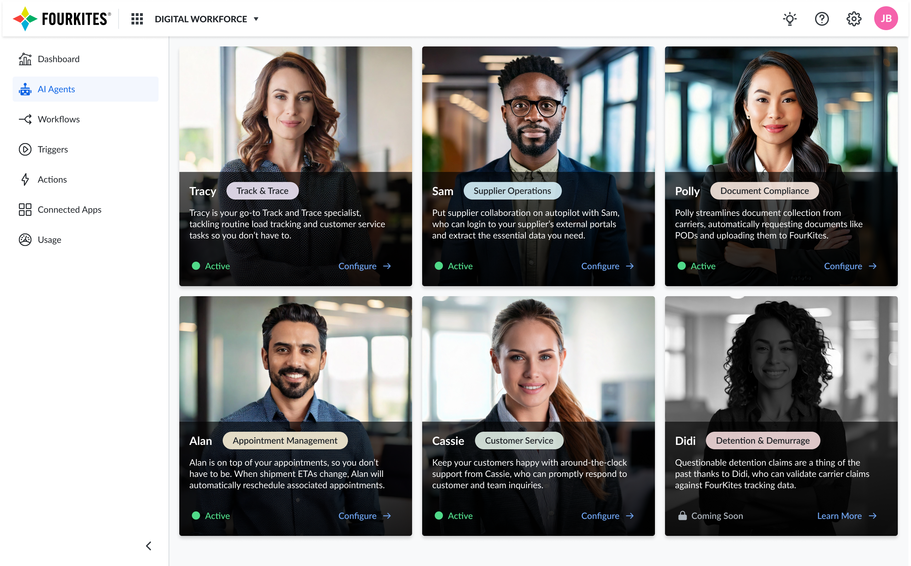
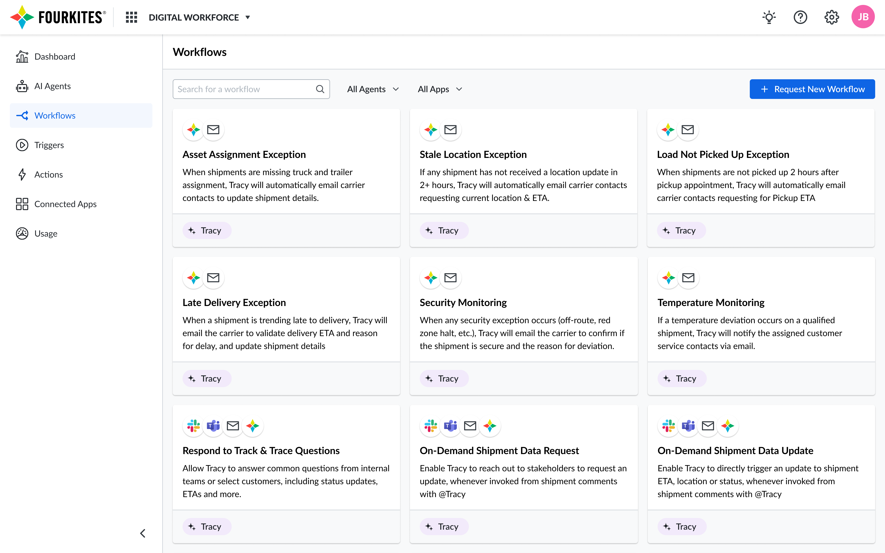
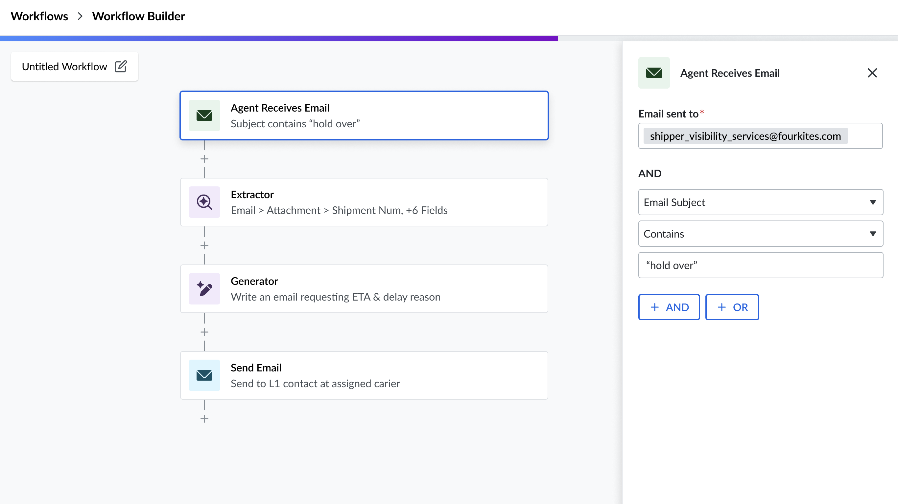
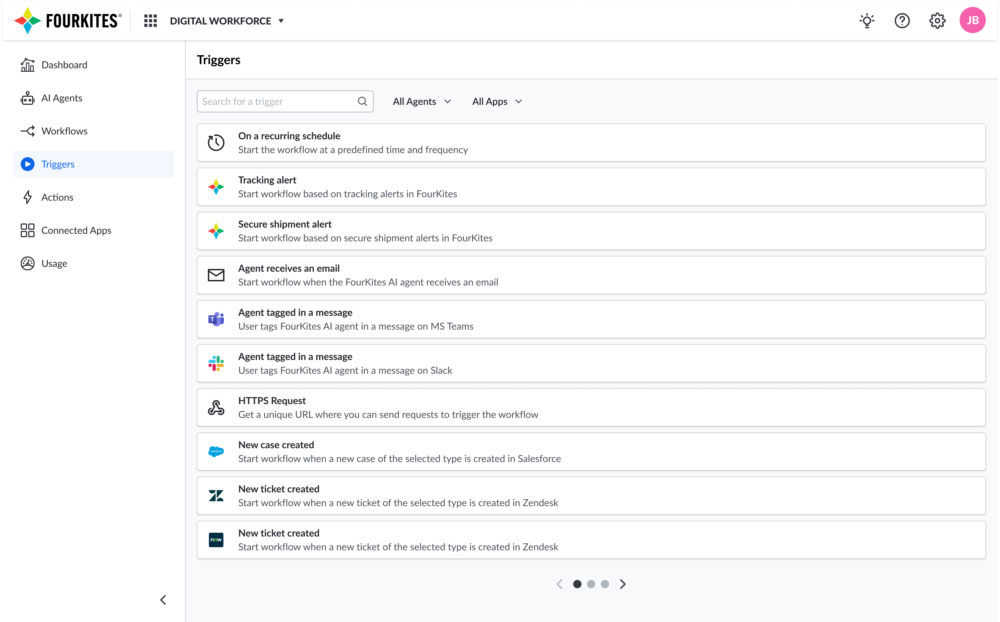
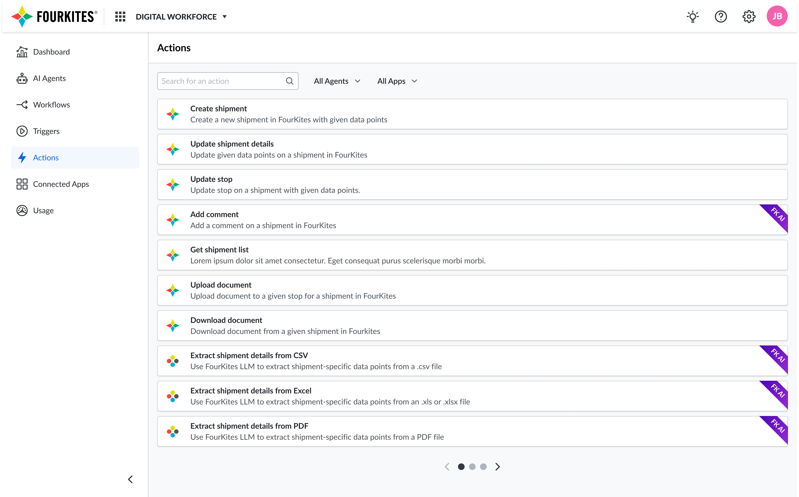
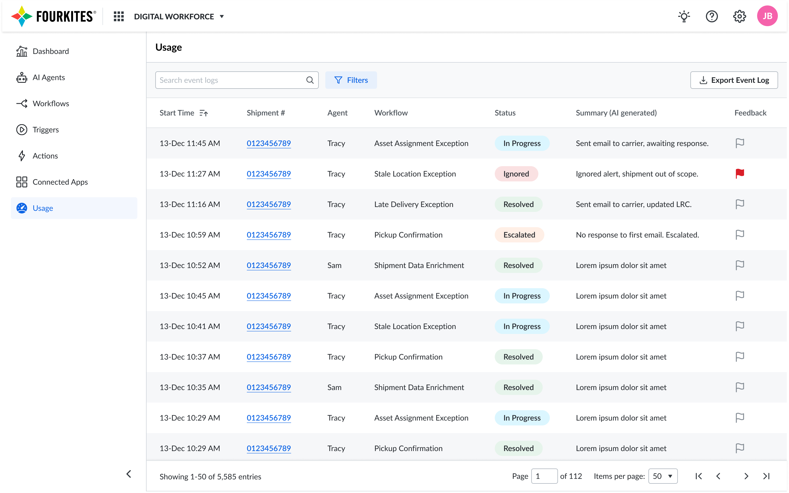

Digital Workforce: AI Agents for Supply Chain Ops
Design strategy for four AI agents (Tracy, Sam, Alan, and Polly) that cut manual workload 50% and lifted enterprise adoption to 85% in six months.
Director of User Experience · Strategy to Launch · 3 minute read
Overview
As Director of User Experience, I led the design strategy for FourKites' AI-powered digital workforce, a suite of agents (Tracy, Sam, Alan, and Polly) that transform supply chain operations. In just 6 months, we achieved a 50% reduction in manual workload, a 20% improvement in tracking quality, and an 85% enterprise adoption rate.
Role: Director of User Experience
Timeline: 6 months (Strategy to Launch)
Team: 4 designers, 2 researchers
Business Impact: $15M+ customer value, 3x increase in enterprise deal size
The challenge
Supply chain teams were spending 15-20 hours weekly on repetitive manual tasks: document collection, appointment scheduling, carrier coordination. Our enterprise customers couldn't scale operations without proportionally increasing headcount.
Key Insight: Through customer research, I discovered that 87% of supply chain inefficiencies stemmed from communication gaps that could be augmented by AI, not replaced by it.
Strategic Vision:
- Elevate humans to strategic work, not replace them
- Create AI agents that feel like trusted team members
- Design for varying technological capabilities across the ecosystem
My role & contributions
Strategic Leadership
- Defined the human-AI collaboration model: AI handles repetitive, high-volume tasks while humans focus on exceptions, decisions, and relationships.
- Advocated for trust, transparency, and configurability as guiding principles for agent design.
UX Design Direction
- Designed scalable workflows that balanced automation with human oversight.
- Created configurable UI frameworks so enterprises could adapt tone, SLAs, and escalation rules to their culture.
- Developed auditing and monitoring dashboards that built confidence in automation.
Cross-Functional Collaboration
- Partnered with AI engineers, logistics SMEs, and product leaders to align technical capabilities with user needs.
- Facilitated workshops with enterprise customers (Unilever, Smithfield Foods, Arrow Electronics) to test and refine AI agent workflows.
The AI agents

Tracy (Track & Trace Specialist)
- Automates shipment visibility and carrier compliance.
- Impact: Improved tracking quality by 20% in 4 weeks; saved 2–3 hours/day per manager.
- UX Focus: Seamless bi-directional communication with carriers, configurable workflows, and transparency dashboards.
Sam (Supplier Collaboration Expert)
- Automates supplier onboarding and document processing.
- Impact: Reduced onboarding time from months to days; lowered IT integration costs.
- UX Focus: Conversational interfaces for suppliers, error-prevention through real-time validation, and AI explainability.
Alan (Appointment Scheduling Assistant)
- Automates end-to-end scheduling and rescheduling.
- Impact: Reduced scheduling workload by 50%; minimized penalties for missed appointments.
- UX Focus: Multi-channel orchestration (email, portals, TMS), intelligent prioritization, proactive exception handling.
Polly (Document Compliance Manager)
- Automates collection and matching of proof-of-delivery documents.
- Impact: Reduced manual effort by 15–20 hours/week, improved compliance rates.
- UX Focus: Trust-building workflows, escalation transparency, and flexible integrations (email, APIs, SFTP).
Impact & results
| Metric | Before | After | Change |
|---|---|---|---|
| Manual Task Time | 20 hrs/week | 2 hrs/week | -90% |
| Tracking Accuracy | 72% | 94% | +22% |
| Document Compliance | 65% | 94% | +29% |
Customer testimonials
"Tracy brought agility to our teams... like augmenting FourKites visibility with an additional pair of eyes 24/7."
Mohammed Mirza, Unilever
"This enabled us to focus on higher value activities rather than chasing emails."
Annabelle Torres, Smithfield Foods
Digital workforce designs





